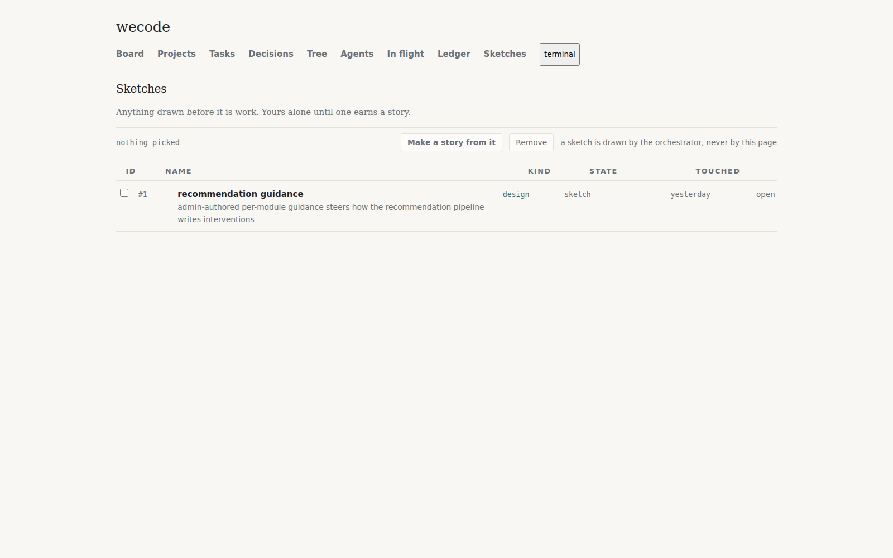
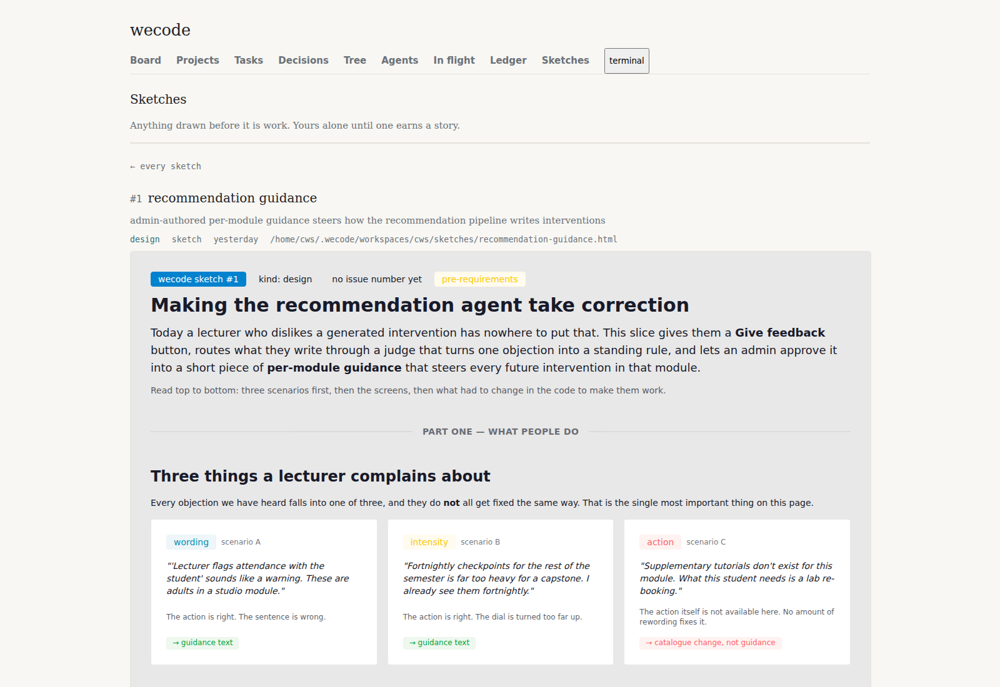

The modify window
A second way into a sketch: the drawing on the left with the review overlay over it, the operator's own shell on the right. ?open= keeps doing exactly what it does today.
What happens now

open at the far right of it.
Both captured from the board running on :8888 a few minutes ago, not drawn by hand.
Two of the three parts already exist
| Part | Where it is | State |
|---|---|---|
| The shell | packages/webapp/src/browser/dock.ts A real xterm.js terminal on a pty, already fixed to the right of every document: #terminal { position: fixed; inset: 0 0 0 auto; width: min(100vw, max(33vw, 32rem)) } |
built |
| Annotation | packages/webapp/src/browser/annotate.ts The painter's pick → annotate → queue → send loop, served at /review/*. A round of notes posts to the dock's own route, so it lands on the command line typed but unsent. |
built |
| The two wired together | Nothing imports annotate.ts from the sketches page. Grep finds only comment references. |
missing |
Why they cannot currently see each other. sketches.ts:343 renders the drawing as
<iframe class="drawing" sandbox="allow-scripts" srcdoc="…"> — deliberately, per the comment above it. Without allow-same-origin the drawing runs in an opaque origin, so nothing outside it can look in. The overlay works by turning a click into a CSS path, which means it has to run inside the document it annotates. The painter's client has no postMessage or contentDocument mode to fall back on — there is no cross-document path to reach for.
The way through, as chosen. In the modify window only, serve the drawing from its own same-origin route instead of srcdoc, and add the four /review/* files to it. The overlay then runs in the drawing's own document and a note carries the CSS path, the tag and the words that were showing — the three things that let an agent find the same thing in the source. ?open= keeps its sandboxed srcdoc, untouched.
What the modify window is
cws@wecode ~/projects/wecode $ ─ 3 notes on sketch #1 ─ 1. section.scenarios > div:nth-child(2) "scenario B should say who turns…" 2. h2.part-one "part one needs the lecturer's name" 3. footer .signed "no signature block yet" $
Drawn in the board's own tokens. The round arrives on the command line typed and unsent — you read it, edit it, and press return, or not. That is annotate.ts's existing rule and this surface does not change it.
The same thing as the gate will read it
A !ui design is judged by the wecode-ui reader, which reads the design's spec — a box tree — captures the screen and diffs the two. So the mockup that matters is the spec itself. This is it, rendered through the repo's own packages/lens wireframe():
120 × 40 cells. The drawing takes 80, the dock 40 — the same third of the width the live #terminal rule already takes. The head is 2 cells: one row carrying the way back, the name and the meta together, so 38 of the 40 rows go to the drawing and the shell. Text rendering is lens's own; the geometry is the claim.
What would change
| File | Change |
|---|---|
| packages/webapp/src/pages/sketches.ts | A modify link beside open on each row and in the open view, carrying target="_blank". The ?open= view is not touched. |
| packages/webapp/src/pages/modify.ts new | The window itself: the drawing route, the dock forced open, the overlay's four files referenced. |
| packages/webapp/src/browser/annotate.ts | Nothing, ideally. It already serves /review/* and already posts to SHELL_AT. |
| packages/webapp/config/ui.yaml | The new elements declared by data-ui name, the way every other element on this surface is. |
| packages/webapp/design/<slug>.yaml new | The design: crosses: ["!ui"], the spec above, provenance_sha, state. |
Story hangs under epic #102, where the other webapp stories are.
Risks, and what I need from you
- The same-origin drawing is a new hole, narrower than the old one. The sketch's own script now runs in the board's origin. It cannot reach the dock's route from inside its own document without the page handing it something, but this is a real widening of what a sketch file can do, and sketches are written by agents.
- A sketch that is a working surface will fight the overlay. Sketch #1 has its own scripts and its own click handlers. Picking an element inside a page that also wants that click is the failure mode to expect first.
- Two shells, one session.
dock.tssays there is one dock per document because there is one session behind it. A modify window opened beside the main board is a second document holding a second pane on the same far end. Whether that is fine or needs its own session is the thing I am least sure about.